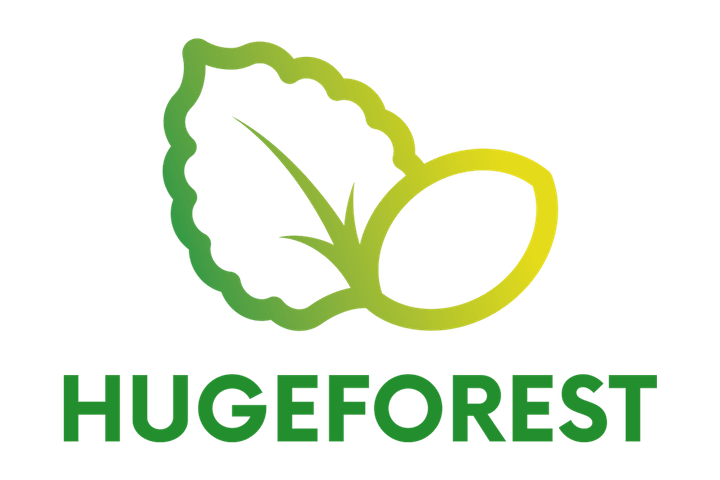

Articulación e innovación para restauración
Huge Forest
Conecta predios, requerimientos ambientales, financiamiento y capacidades técnicas para facilitar proyectos de restauración ecológica con impacto territorial.
Rol dentro del grupo
Actúa como puente entre oportunidades de restauración, propietarios, empresas e instituciones que buscan desarrollar soluciones ambientales de mayor escala.